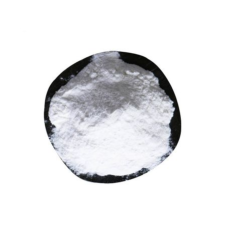

Back to Products
Peptide

Seidecosa peptide is a product with smaller molecular weight consisted by a few or 10(ten) odd amino acids. The molecular weight is generally between 2000 to 3000 DA with better water soluble property but not dissolved in the high density ethanol or ether.
Two kind of Seidecosa peptide is available:
Functions
• The Siedecosa peptide is soluble silk protein, containing 18 kinds of amino acids, including the serine protease and amino-succinic acid, glutamic acid.These are all kind of skin nurture, which are easily absorbed through epidermis to improve the nourishment of skin through epidermis cell and strengthen skin cell energy.
• It can strengthen the effect of skin and delay decrepitude. The Seidecosa peptide can restrain the activity of the beta-parahydroxy-phenylpropionic acid, the element of melanin in the skin. And it can make the skin pure without blemish.
• The Seidecosa peptide is a kind of natural wet adjusting material, effectively hydration function, and makes skin full of flexibility, moisture.
• eidecosa peptide is good treatment to dry skin, the skin scratch and the gestation scratch, protecting skin from sunlight strictly and coldly. It can promote skin organization of rebirth and wound.
• Seidecosa peptide makes a good effect as the function of cosmetic . Because the silk protein is extremely alike hair's, it protects the hair immediately by becoming one thin but transparent protection film on the hair surface. It can increase hair flexibility, sheen and softness, and is free from the influence that water flushes.
Facts
| Common name | Seidecosa peptide powder |
| Appearance | White / Light yellow powder |
| INCI name | Hydrolyzed silk (CAS NO. 73049-73-7) |
| Solubility | Soluble |
| In different molecular weight | 2000 TO 3000 DA , 6000 & 12000 DA respectively. |
Key Properties & Usage
- 1. Good moisturizing effect
- 2. Promotes skin cell regeneration
- 3. Easily bind with hair surface, Gives softness to hair
- 4. Controlling the growing of skin melanin
- 5. Additive in hair spray and conditioners
- 6. Excellent hair-protection function
- 7. Used in body soaps and lotions
| Item | Silk Peptide Powder |
|---|---|
| exterior | light yellow powder |
| dissolvability | dissolved in water and< 40% ethanol |
| total N %(W/W) | ≥15.5 |
| Weight loss on drying %(W/W) | ≤3.1 |
| pH value | 4.0-7.0 |
| Hg mg/kg | ≤1 |
| As mg/kg | ≤5 |
| Pb mg/kg | ≤20 |
| aerobic bacterial count, num/g | ≤100 |
| fecal coliforms, num/g | nondetactable |
| Pseudomonas aeruginosa | nondetactable |
| Staphylococcus aureus | nondetactable |
Package:
Seidecosa Peptide is packed in compound plastic bag of 1 kg/25 kgs of drum. The shelf life of the product is two years under the sealing condition. It should be kept in cold, dry & no direct light place for two year’s period of quality guarantee